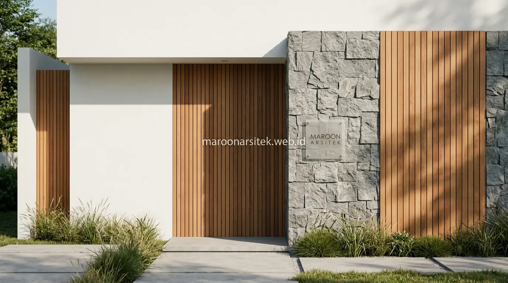

Desain rumah minimalis modern tren 2026 mengarah pada kombinasi garis bersih, material alami, dan skema warna netral hangat, menghadirkan tampilan estetik tanpa elemen dekoratif yang berlebihan pada fasad maupun tata ruang. Maroon Arsitek melalui layanan jasa arsitek rumah merangkum sejumlah ide desain yang dapat menjadi referensi sebelum berkonsultasi lebih lanjut mengenai konsep rumah minimalis modern Anda.
Mencari referensi visual yang tepat menjadi langkah awal penting sebelum menentukan konsep akhir rumah, karena setiap elemen desain perlu disesuaikan dengan karakter lahan dan preferensi penghuni. Berikut dua belas ide desain yang dapat dipertimbangkan, dikelompokkan berdasarkan elemen utama fasad dan tata ruang.
Ide Desain Fasad Minimalis dengan Kombinasi Material
Fasad minimalis modern tren 2026 banyak mengeksplorasi kombinasi material sebagai elemen estetika utama, menggantikan ornamen dekoratif dengan permainan tekstur dan bidang yang lebih bersih secara visual. Berikut beberapa ide yang dapat menjadi referensi:
- Kombinasi Plester dan Batu Alam: Kombinasi dinding plester halus dengan aksen batu alam pada bagian tertentu, menghadirkan kontras tekstur tanpa membuat fasad terlihat ramai.
- Aksen Panel Kayu Vertikal: Penggunaan panel kayu vertikal pada area tertentu, memberikan kehangatan visual pada fasad yang didominasi warna netral.
- Bidang Kaca Lebar: Fasad dengan bidang kaca besar pada area tertentu, menghadirkan kesan modern sekaligus memaksimalkan pencahayaan alami ke dalam ruang.
- Atap Datar Kemiringan Tersembunyi: Kombinasi atap datar dengan sedikit kemiringan tersembunyi, memberikan kesan bersih tanpa mengorbankan fungsi drainase air hujan.
Setiap kombinasi material tersebut dapat disesuaikan dengan kondisi iklim dan orientasi lahan, agar hasil akhir tidak hanya estetik namun juga fungsional dalam jangka panjang bersama tim jasa kontraktor rumah kami.
Harmonisasi Material Alami pada Iklim Tropis
Di wilayah tropis Indonesia, pemilihan material alami seperti batu paras, granit kasar, atau kisi-kisi kayu komposit (WPC) membutuhkan perhitungan pelapisan waterproofing yang tepat. Arsitek memastikan material tersebut tahan terhadap paparan sinar UV dan curah hujan tinggi tanpa memudarkan kesan mewahnya.
Ide Skema Warna dan Pencahayaan Fasad yang Estetik
Skema warna dan pencahayaan fasad turut menjadi elemen penting dalam menghadirkan kesan modern pada rumah minimalis, di mana pemilihan yang tepat mampu memperkuat karakter desain tanpa memerlukan elemen tambahan yang rumit. Berikut ide yang dapat dipertimbangkan:
- Skema Monokrom Hangat: Skema warna monokrom dengan aksen warna kayu, memberikan kesan modern namun tetap hangat dan tidak terkesan dingin.
- Pencahayaan Tersembunyi (Hidden LED): Pencahayaan tersembunyi pada garis atap atau dinding, menciptakan efek dramatis pada fasad saat malam hari tanpa lampu yang mencolok di siang hari.
- Gradasi Warna Vertikal: Penggunaan warna gelap pada bagian bawah fasad dan warna terang pada bagian atas, menciptakan kesan bangunan yang lebih ringan secara visual.
- Focal Point Pintu Utama: Aksen warna tunggal pada elemen tertentu, seperti pintu utama, sebagai focal point yang menonjol di antara skema warna netral keseluruhan fasad.
Pemilihan skema warna sebaiknya tetap konsisten dengan karakter lingkungan sekitar, agar rumah tidak terlihat kontras berlebihan dengan bangunan di sekitarnya.

Pencahayaan Arsitektural untuk Mempertegas Dimensi Bangunan
Penempatan lampu up-light di dasar dinding tekstur batu atau linear lighting di bawah kantilever balkon mampu menciptakan bayangan artistik saat malam tiba. Hal ini tidak hanya menambah nilai estetika hunian, tetapi juga meningkatkan keamanan area masuk rumah.
Ide Tata Ruang dan Elemen Eksterior Pendukung Fasad
Tata ruang dan elemen eksterior turut memengaruhi kesan keseluruhan desain rumah minimalis modern, karena fasad yang menarik perlu didukung penataan area sekitar yang selaras dengan konsep bangunan utama. Berikut ide yang dapat menjadi referensi:
- Carport Terintegrasi: Carport terintegrasi dengan struktur atap utama, menciptakan kesatuan visual antara area parkir dan bangunan rumah secara keseluruhan.
- Taman Kering Minimalis (Dry Garden): Taman kering minimalis di area depan, memberikan sentuhan hijau tanpa memerlukan perawatan intensif seperti taman konvensional.
- Pagar Rendah Elemen Lanskap: Pagar rendah atau tanpa pagar dengan batas lahan berupa elemen lanskap, menghadirkan kesan terbuka yang banyak diminati pada desain rumah modern.
- Teras Depan Plafon Tinggi (High Ceiling): Teras depan dengan void atau ketinggian plafon lebih tinggi, memberikan kesan megah pada area masuk tanpa memperluas denah bangunan secara signifikan.
Setiap ide tata ruang eksterior tersebut dapat dikombinasikan sesuai kondisi lahan, sehingga hasil akhir tetap proporsional dan tidak mengorbankan fungsi utama rumah sebagai tempat tinggal. Anda juga dapat memadukan estetika eksterior ini dengan rancangan jasa desain interior agar suasana di dalam rumah tetap selaras dan nyaman.
Kesatuan Konsep Arsitektur dan Interior
Kunci keberhasilan rumah minimalis modern 2026 adalah kesinambungan antara tampilan luar dan ruang dalam (seamless indoor-outdoor connection). Penggunaan pintu geser kaca lebar yang menghubungkan ruang keluarga ke taman samping memberikan sirkulasi udara optimal dan pencahayaan melimpah sepanjang hari.